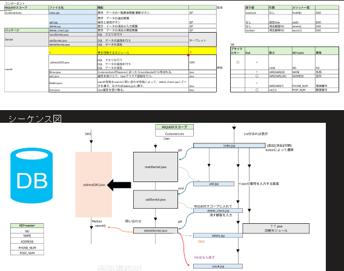

他にも作成したサーブレット
---Web Applications---
・ストーリーゲーム
JavaScriptでも同じゲームは出来ますが主人公の選択によって
一定のGirlクラスを実装した女の子クラスをjavaで作成することで
オブジェクト指向の理解がふかまりました。
・クイズゲーム
複数人でのアクセスを想定し、JSPを用いてランキング表示を実装しました。
1つのJSPページで一定のページだけど
ランキングをfor文で何人分Listから取り出す処理が書けるのは、
WEBアプリケーションの動的なページ生成の強みを学びました。
・顧客リストの作成

チーム開発でそれぞれの連携と共有しないといけない変数・クラス名などを
決めて各々の機能を担当する事で開発効率を何倍にも出来る事を学びました。
自分は主にSQL文を用いてデータベースとのやり取りをするDAOクラスを作成しました。
サーブレットの勉強ではサーバとHtml/cssデータベースSQL/VAOパターンなどの色々な知識の 集合として様々な業務的な顧客リストを作成するWEBアプリケーションの作成にチャレンジしました。
自分で作成したマインスイーパーは、悩んだ点が多く2次元配列と他の2次元配列に対してboolean型の フィールドを工夫して表示・非表示を切り替えるロジックで、配列の外側indexより小さい所を、 参照しない様にテンキーを意識してロジックを考えたりBombは同じインスタンスを参照したりの 工夫をしました。
特に工夫したのは、一番最初に押した時にマップが生成される様にした事です。押す前にマップが生成されてしまうと 運ゲーになってしまうので、あとからの仕様変更に苦労しました。
◆今後の課題
マス目のインスタンスを一つずつ作ってしまうので、16*16の260個程インスタンスが作られる為サーバの負荷の面で、WEBアプリケーションとして はあまり良くないと完成してみて思いました。